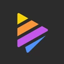
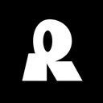
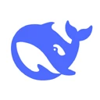
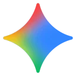
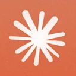
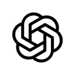

Contenido IA · Programas recomendados
Programas recomendados
Lo que recomendamos en cada vídeo, agrupado por el vídeo del que vienes. Con lo bueno y lo que hay que saber.

Del vídeo
3 IAs gratis que destruyen a las de pago
Y te ahorran más de $60 al mes
-
1
 Abrir ↗
Abrir ↗Adobe Podcast Enhance Arreglar audios · gratis
Subes una nota de voz con viento o ruido y te la devuelve como si la hubieras grabado con micrófono de estudio.
Funciona en el navegador. La versión gratis tiene límite de duración por archivo.
-
2

Abrir ↗Napkin AI Diagramas · gratis
Pegas cualquier apunte o texto y te genera diagramas e infografías profesionales en segundos.
Ideal para presentaciones y para estudiar.
-
3

Abrir ↗Recraft Logos y vectores · gratis
Crea logos, vectores en SVG e ilustraciones 3D sin pagar Midjourney ni Illustrator.
El SVG se puede ampliar sin perder calidad: perfecto para logos.

Del vídeo
3 IAs gratis que te ahorran plata
Probadas de verdad
-
1
Abrir ↗
Upscayl Mejorar fotos · gratis
Mejora fotos viejas o pequeñas hasta 4 veces su tamaño, en tu propio ordenador.
Es de código abierto y funciona sin internet: tus fotos no salen de tu equipo.
-
2
 Abrir ↗
Abrir ↗NotebookLM Estudiar · gratis
Le subes tus apuntes o PDFs, te los explica, responde solo con lo que hay en ellos y te hace examen.
Es de Google. Necesitas una cuenta de Gmail.
-
3

Abrir ↗DeepSeek Escribir y razonar · gratis
Un chat gratuito muy bueno razonando. En el vídeo le pedimos el reclamo al banco.
No le pegues datos sensibles (DNI, cuentas, contraseñas): como en cualquier chat, quedan en sus servidores.
Octubre de 2026
La mejor IA para cada cosa
Del vídeo «Las mejores IA de octubre», con el ranking de votos de Arena

Gemini 4 Argon
Claude Opus 5.5
GPT-Image-2.5Fuente: Ranking de votos de Arena (arena.ai), del 7 al 20 de octubre de 2026. Cambia cada mes.